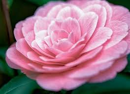

CAMÉLIAS

O que é?
A Camélia é um arbusto de folhagem perene e brilhante, famoso por suas flores simétricas que parecem feitas de porcelana. Originária do leste da Ásia, ela floresce principalmente no outono e inverno, trazendo cor ao jardim quando a maioria das outras plantas está em repouso. É um símbolo de admiração, perfeição e longevidade.
Como cuidar?
Camélias são exigentes com o ambiente, mas recompensam com flores incríveis:
- Luz: Elas preferem a meia-sombra. O sol direto nas horas mais quentes pode queimar suas pétalas delicadas e folhas.
- Solo: Necessitam de solo ácido, rico em matéria orgânica e com excelente drenagem. Não gostam de solos calcários.
- Rega: A rega deve ser regular para manter o solo úmido, mas nunca encharcado. Elas são sensíveis à falta de água durante a formação dos botões.
- Temperatura: Gostam de climas amenos e frescos. Proteja-as de ventos fortes e secos que podem derrubar os botões precocemente.
Curiosidades
- Parentesco Famoso: Você sabia que o chá preto, verde e branco vêm da planta *Camellia sinensis*, uma "prima" da camélia ornamental?
- Sem Perfume: A maioria das camélias ornamentais não possui cheiro; elas conquistam puramente pela perfeição visual de suas formas.
- Resistência: Elas são conhecidas por sua longevidade, existindo exemplares em templos asiáticos com centenas de anos.
- Símbolo de Luxo: A camélia branca tornou-se o ícone mundial da alta costura da marca Chanel, representando sofisticação absoluta.